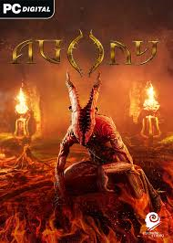

ABOUT THIS GAME
Please bear in mind that Agony is quite an "old school" game; non-linear, with a semi-open world, a lot of different paths, endings, exploration possibilities as well as secrets to uncover. Playing Agony is notably different than what you can get from modern, mostly linear and corridor-style horrors.
SYSTEM REQUIREMENTS
OS: Windows 7 / 8 / 10
Processor: Intel Core i3 3.2 GHz, AMD Phenom II X4 955 - 4 Core, 3.2 GHz
Memory: 8 GB RAM
Graphics: Radeon R9 280 or Nvidia GeForce GTX 660
DirectX: Version 11
Storage: 17 GB available space
Sound Card: DirectX compatible
Additional Notes: System requirements may change during the development of the game.